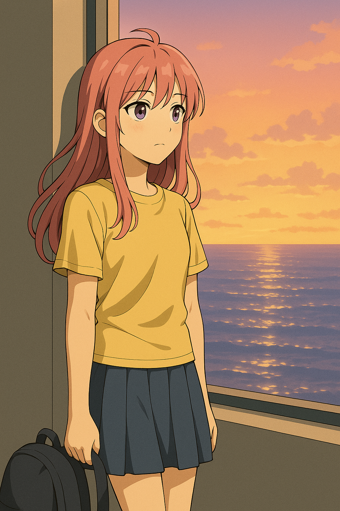
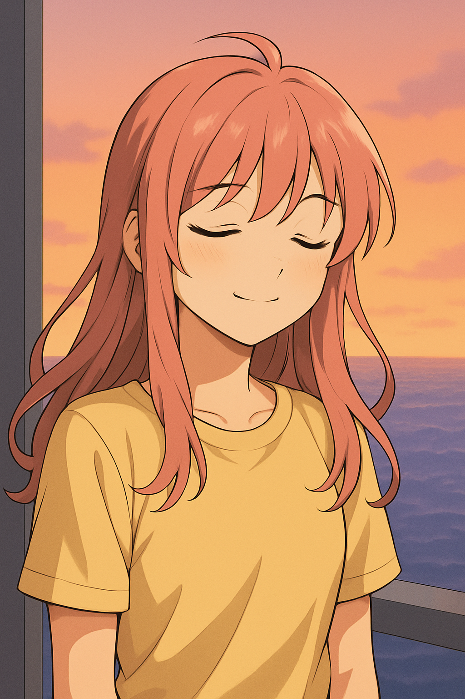
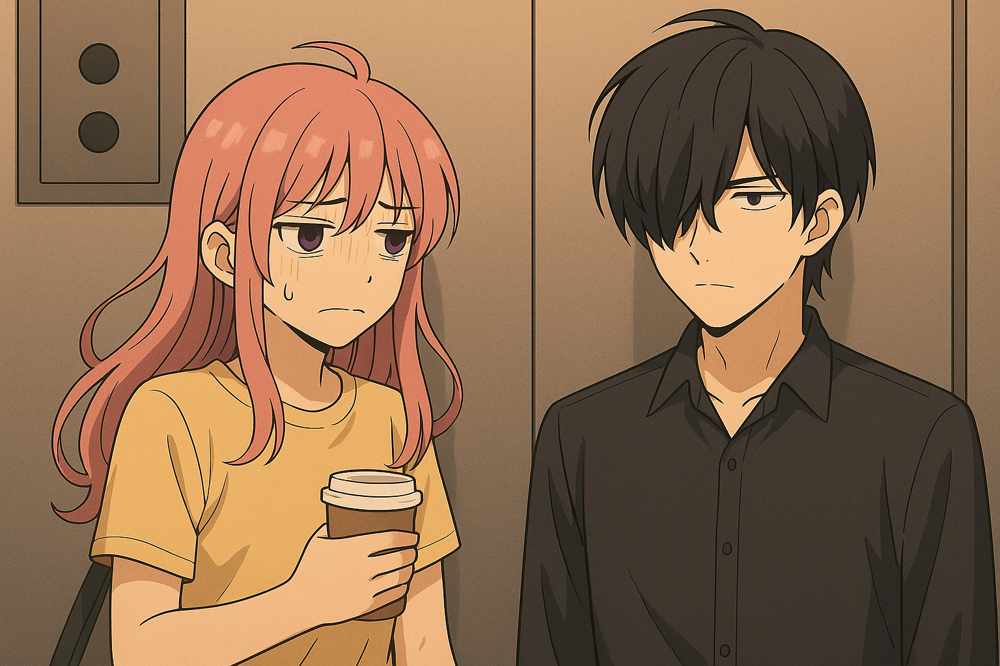
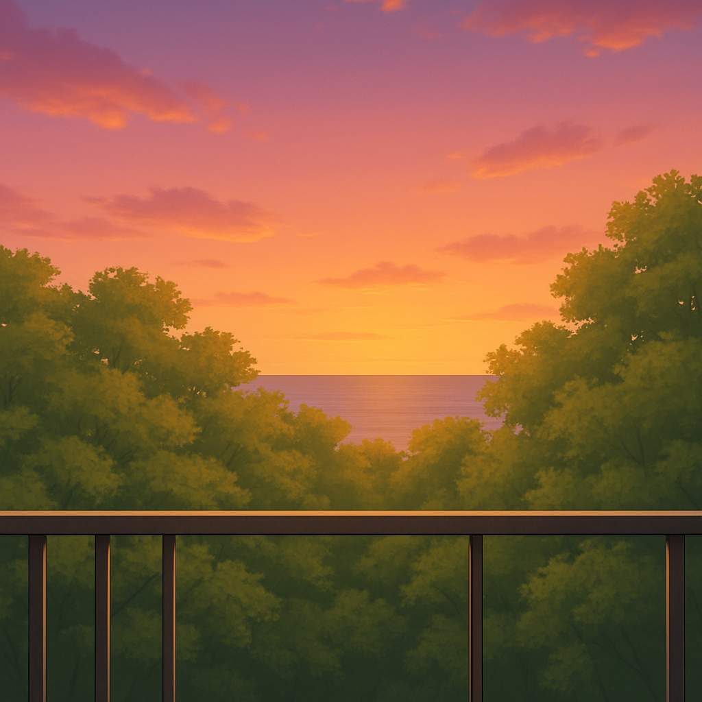

【正文】
01｜加班后的独行
夜幕降临，办公室逐渐清空。
肖笑笑收好笔电和工具包，走向货梯，果断地按下按钮。
等待货梯的时间，落地窗外，天色被橘紫色染满，海平线泛起粼粼波光。
OS：没人说货梯不能承载浪漫。
货梯迟迟不来，她靠在一旁的墙边，背包垂在脚边。
手边是今天没喝完的咖啡，背包里还有一包没吃的饼干。
OS：虽然等得像在和宇宙对话，但这一刻，比按摩椅还放松。

02｜五分钟的独处时光
手机信号微弱，她也懒得刷消息。
只听得见货梯的轻微运转声和远处的海浪拍打岸边。
她靠着墙闭上眼，嘴角扬起一点点笑意。
那是一种难得的宁静，仿佛全世界按下暂停键，时间只为她而停。
这五分钟没有任务，没有回应消息的焦虑，也没有“快一点”的催促。
OS：居然有点期待货梯永远不来，能一直偷这片刻清静。
货梯吱呀一响缓缓关门。她靠在一角，准备飞速下降，心情却放松下来。

03｜555层又见神秘男
货梯在555层“叮”一声停下。
门缓缓打开，一道熟悉的黑影走了进来，是神秘男。
他一如既往穿着黑衬衫，站在货梯对角，低头看手机。
气氛安静到连货梯机械声都变得柔和。
笑笑抿了抿嘴角，小声说：
“又见面了。”
神秘男抬头，语气平静：
“饮水机外包怎么还加班。”
肖笑笑眨了眨眼，捏了捏手里的咖啡杯。
OS：他是我命里的霉运男吗？今天每次倒霉时都能遇见他。

04｜回到树景房
货梯在地面层缓缓停下，门打开，晚风夹着海咸味扑面而来。
肖笑笑几乎是逃也似地走出货梯，扭头瞄一眼，看到货梯门正缓缓关上。
OS：拜托了，霉运男就留在货梯里吧……
她穿过静悄悄的大堂，回到自己的树景公寓。
换上舒适的粉色睡衣，她打开阳台门，脱下鞋子坐下，靠在椅背上。
远处的树叶被风吹得沙沙响，隐约能听见海浪声。
她喝了一口彻底凉掉的咖啡，叹了口气。
OS：今天好像做了很多又好像什么都没做，但也挺好。明天早点出门，避开神秘男，霉运退散。
OS：明天就算还得修打印机，也没什么大不了的啦。
OS：每天能听听海风，看看海景，其实已经很满足了，大海，明天见。
